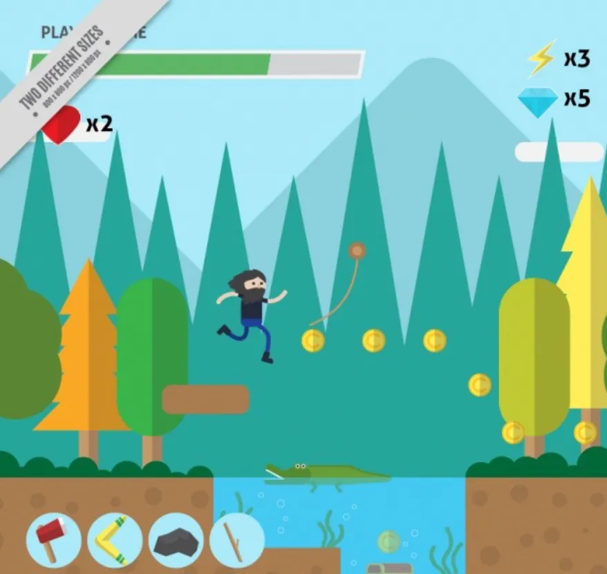

Valget af flat design til mit spil er ikke blot æstetisk, men også funktionelt. Den enkle og klare stil skaber ikke kun et visuelt tiltalende look, men forbedrer også spiloplevelsen ved at fjerne unødvendig kompleksitet. Brugen af flade, farverige elementer gør det lettere for spillerne at fokusere på kernen i spillet uden distraktioner.
